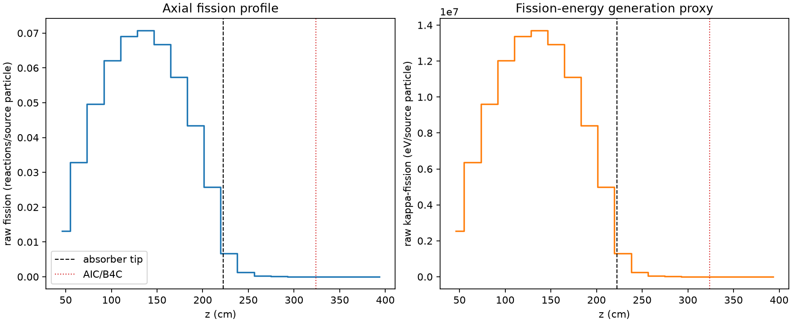
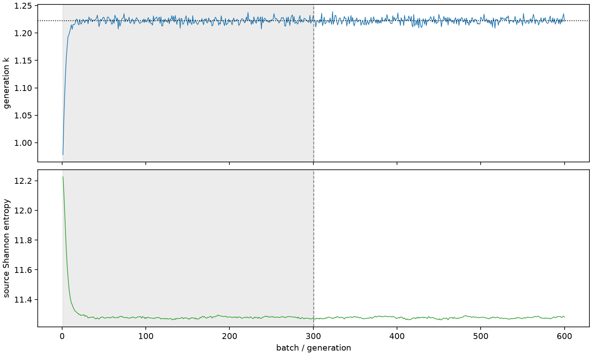

| field | value |
|---|---|
| experiment | V2-STAGE_128_OGRENCI_03-0006 |
| k | 1.2225802637797578 |
| MC standard error | 0.00020376309453849767 |
| seconds | 1014.5790043810048 |
| acceptance | not_assessed |
| convergence | review_required |
Completed is output integrity only; physical and statistical review required. Zero tallies do not prove zero production or zero uncertainty.
| diagnostic | value |
|---|---|
| geometric fuel voxels | 5280 |
| zero fission tally voxels | 680 |
| low signal fuel voxels | 1639 |
| low signal fission share | 7.221809655192763e-05 |
| low signal kappa share | 7.224117207307096e-05 |
| important fission share | 0.9500829417289475 |
| previous filter included | 3641 |
| duration estimate s | 1562.5173488400023 |
| actual minus estimate s | -547.9383444589976 |
| fission relative MC error | statistics |
|---|---|
| all_geometric_fuel | {"voxels": 5280, "positive_mean_voxels": 4600, "zero_mean_voxels": 680, "undefined_relative_error_voxels": 680, "median": 0.010500163358859612, "p95": 0.8866391397196068, "maximum": 1.0000000000000002} |
| low_signal | {"voxels": 1639, "positive_mean_voxels": 959, "zero_mean_voxels": 680, "undefined_relative_error_voxels": 680, "median": 0.5843361273258789, "p95": 1.0, "maximum": 1.0000000000000002} |
| important_95pct | {"voxels": 2340, "positive_mean_voxels": 2340, "zero_mean_voxels": 0, "undefined_relative_error_voxels": 0, "median": 0.006886944899104712, "p95": 0.010060748206247493, "maximum": 0.011830715924859948} |
| outside_previous_filter | {"voxels": 1639, "positive_mean_voxels": 959, "zero_mean_voxels": 680, "undefined_relative_error_voxels": 680, "median": 0.5843361273258789, "p95": 1.0, "maximum": 1.0000000000000002} |
| kappa_fission relative MC error | statistics |
|---|---|
| all_geometric_fuel | {"voxels": 5280, "positive_mean_voxels": 4600, "zero_mean_voxels": 680, "undefined_relative_error_voxels": 680, "median": 0.0104873527781245, "p95": 0.8857616613887626, "maximum": 1.0000000000000002} |
| low_signal | {"voxels": 1639, "positive_mean_voxels": 959, "zero_mean_voxels": 680, "undefined_relative_error_voxels": 680, "median": 0.5841335272100238, "p95": 1.0, "maximum": 1.0000000000000002} |
| important_95pct | {"voxels": 2340, "positive_mean_voxels": 2340, "zero_mean_voxels": 0, "undefined_relative_error_voxels": 0, "median": 0.00687958079164935, "p95": 0.010048721102957833, "maximum": 0.011818624168917274} |
| outside_previous_filter | {"voxels": 1639, "positive_mean_voxels": 959, "zero_mean_voxels": 680, "undefined_relative_error_voxels": 680, "median": 0.5841335272100238, "p95": 1.0, "maximum": 1.0000000000000002} |
| axial bin | fission share | kappa-fission share |
|---|---|---|
| 1 | 0.026332270319188104 | 0.026333393463167355 |
| 2 | 0.0659320724565276 | 0.06593159825999666 |
| 3 | 0.09936799391825864 | 0.09936734925741987 |
| 4 | 0.12432680789264126 | 0.12432596810933927 |
| 5 | 0.1383525019770123 | 0.1383517070052649 |
| 6 | 0.14162657311125354 | 0.14162572966204523 |
| 7 | 0.13360322600669997 | 0.1336023852301533 |
| 8 | 0.11481198607697439 | 0.11481124643998833 |
| 9 | 0.08705004637464053 | 0.08704943943517006 |
| 10 | 0.05168014097668806 | 0.05167999071488704 |
| 11 | 0.013450501687650942 | 0.013453876704462622 |
| 12 | 0.002665412381326871 | 0.0026665410479524295 |
| 13 | 0.0006161744410283186 | 0.0006164195722885549 |
| 14 | 0.00014221654272510192 | 0.0001422651962051001 |
| 15 | 3.208011464159547e-05 | 3.209030862724658e-05 |
| 16 | 7.930870469975735e-06 | 7.933848078970831e-06 |
| 17 | 1.6980345769291318e-06 | 1.6990231848885695e-06 |
| 18 | 2.831581475949525e-07 | 2.831622060559818e-07 |
| 19 | 8.365954833219668e-08 | 8.355956216530059e-08 |
| 20 | 0.0 | 0.0 |
Histories include the inactive-to-active transition at batch 300. kappa-fission approximates fission energy production, not total heat deposition.

